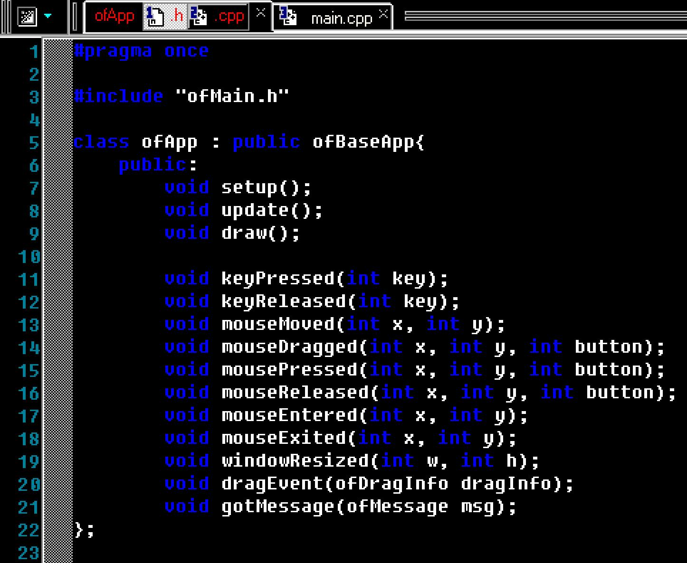

项目工程机制
使用项目生成器新建项目
安装projectGenerator
如果你想在linux上安装项目生成器，我给你解决方法。如果不安装这个，官方自带的projectGenerator貌似是无法正常使用的。（注意了，下面命令行中的OF就是你解压后那个文件夹的名字）：
先执行scripts/linux/distro_name/install_dependencies.sh
在Ubuntu下打开命令行窗口并键入:
cd OF/scripts/linux/ubuntu
sudo ./install_dependencies.sh在根目录下有projectGenerator-linux64文件夹，打开文件夹之后选择projectGenerator即可打开图形界面新建项目。
重要说明：在新建项目的时候，官方文档特别说明建议将新的项目建立在解压文件的根目录/apps/myApps目录下。如果你建在其他位置，会出问题的哟。
命令行的方式新建项目
如果之前安装过了projectGenerator也可以通过命令行的方式新建项目，新建项目的指令如下：
projectGenerator (键入该指令可查看参数帮助)
projectGenerator -o"../../../../"../../../../apps/myApps/newExample
(create a project called newExample using a relative path for the oF root and the project. note the relative path may ferent depending on where this app is Located)
projectGenerator-r-o"../../../../"../../../../examples
(recursively update the examples folder)
projectGenerator -o"../../../../" -a"ofxXmlsettings, ofxopenCv"../../../../apps/myApps/newExample
(create update an example with addons)手动新建项目
在我们下载下来的源码中带有示例程序，其中有一个emptyExample位于examples/templates文件夹中，因此我们在新建项目的时候可以直接把这个项目拷贝到我们需要的地方（前面说过，一般拷贝到OF/apps/myApps目录下），重命名一下就ok了。
项目文件夹结构
每个OF工程的文件夹都有相似的结构，我们以pointCloudExample这个工程为例，如果不适用扩展插件（addons）的话，打开文件夹你可以看到整个项目中基本的内容就是这样。
src里面放我们的代码，其中最基本的三个文件main.cpp，ofApp.cpp，ofApp.h是本来就有的，如果需要也可以自己加cpp或头文件进去。
bin里面放的就是编译之后可执行的程序。
obj里面存放的是汇编完的机器指令，全是二进制啦。
Makefile是我们在这个项目里编译时的入口。
README.md就是让你读它，没什么好看的。
#bin文件夹：这个文件夹用来存放可执行文件（也可能是库文件，或者包含一些DLL，这个取决于你的系统）如果你编译了这个工程，你会发现该文件夹中有一个pointCloudExample_debug的可执行文件，其后的_debug就是你在工程中选择的编译调试模式，这个模式允许你设置断点，进行逐步调试。
【断点调试：指自己在程序的某一行设置一个断点，调试时，程序运行到这一行就会停住，然后你可以一步一步往下调试，调试过程中可以看各个变量当前的值，出错的话，调试到出错的代码行即显示错误，停下】
项目在Debug模式下变异比较缓慢，所以如果你想项目变异的速度快一些，可以选择Release模式下进行编译。
同样，在这个文件夹下面，你会找到data文件夹。这个文件夹下面用来存放如下内容：图片、视频、xml文件以及其他你的工程需要的文件。OF的工程默认以这个文件夹来加载或者存放数据。
#src文件夹：这里面用来存放我们需要的.h头文件.cpp源文件，其中有OF默认的文件，也可以包含我们自己写的各种文件
#其他项目：在windows下，VS开发中这里面会包含.sln文件以及其他相关用VS进行打开的文件，对我们没什么影响，这里就不再解释了。
项目代码结构
我们要开始有趣的部分了。OF的项目，在src文件夹中至少包含main.cpp，testApp.cpp和testApp.h这三个文件夹.代码结构还是很一目了然的。
【注意：如果一个函数或者类以OF开头，那说明它属于Openframeworks或者OF的插件，比如ofPoint, ofImage, and ofSetColor().比如ofxXmlSettings等等】
mian.cpp：这里面只是设置了显示的窗口大小，然后调用ofApp了。对于入门的人来说似乎不用理他。在C++项目中，必须有一个.cpp文件中定义了main()函数。这个函数是整个工程的起始点。在OF中main()包含扎mian.cpp中。这其中最重要的部分就是：
ofSetupOpenGL( &window, 1024, 768, OF_WINDOW );
这个函数ofSetOpenGL()告诉OF系统需要创建一个宽1024像素高768像素的虚拟屏幕，最后的OF_WINDOW意味着要以窗口的形式创建屏幕。如果你需要全屏，可以设置参数OF_FULLSCREEN，那么这个项目就会全屏运行。
举个例子，如果你需要你的项目以1920X1080像素全屏运行，你就可以修改这个函数为
ofSetupOpenGL( &window, 1920, 1080, OF_FULLSCREEN);
通常你没有必要修改main.cpp文件，因为屏幕尺寸分辨率可以再testApp.cpp文件中进行修改
【注意：在main()函数中，大多数的OF函数都不会起作用，因为路径以及一些初始化还未完成。所以，最好还是不要动main.cpp文件，把要做的工作在testApp.cpp中完成】
ofApp.h/testApp.h：这里面好像是定义的ofApp类，继承自ofBaseApp类，因此可以理解为：这里面是一些封装好了的方法，新手也可以先不管他.这个文件以#pragma once 开头，这是一条编译器命令，意思是这个文件应该在所有的.h文件的最前面编译。紧接着是#include "ofMain.h" 这个.h文件包含了OF最核心的类和函数。之后申明了testApp类，继承自OF的基类ofBaseApp：

#pragma once #include "ofMain.h" class ofApp : public ofBaseApp{ public: void setup(); void update(); void draw(); ///... }testApp.h这个头文件中，包含了一些函数声明，setup()、update()、draw()、还有一些变量的声明。这些是保证你工程运行的最基础的函数。他们是在ofBaseApp类中定义，并被OF系统来调用的。main()主函数来连接testApp类和其他的OF类并在这里面进行程序的运行。
做一下总结：当你新建一个工程的时候，你应该保留setup()、update()、draw()函数以及一些涉及到屏幕触屏这些基础函数和你自己要用到的函数的声明。
ofApp.cpp/testApp.cpp
这里面就是之前的头文件中看到的各种函数了，新手注意,这是最重要的部分,因为我们就是就要在这里写代码。不过openframeworks的代码逻辑一目了然,非常好理解。
一些基本的方法说明如下：
setup 在程序启动时执行一次;
draw 在程序启动后每秒执行60次(该频率可设), 用来绘制图形;
update 跟 draw 一样, 每秒执行60次, 把需要更新的代码放在这里;
keyPressed 处理按键事件;
还有处理鼠标事件的一系列函数, 这里就不赘述了.
为什么会使用这种代码结构? 因为 openFrameworks 原本的设计目的就是要让非计算机专业的人士通过编程来创造各种计算机视觉/图像/视频/声音艺术, 所以它才会搞成这种简单易用但是功能强大的形式。那对编程经验丰富的人更好理解了.
testApp.cpp包含所有在testApp.h里面声明的函数，我们通过基础函数的来解释一下OF的运行机制。OF中，setup()函数是最先被调用的，里面包含数据的初始化，其次就是update()和draw()函数的循环调用。
下面我们详细的看看这些函数：
setup():setup()函数只会在程序开始运行的时候，被调用一次。在这里做一些初始化是最合适不过的了，比如设置刷新频率、加载图片、视频开启一些进程比如打开摄像头等。
下面是一些最常用的控制屏幕参数的函数：
ofSetFrameRate（rate):这个函数设置屏幕的刷新频率，int型，同时他控制调用update()和draw()函数的调用频率，毕竟这两个函数是在每帧中调用的。最常用的刷新频率是60，这是大多数电视以及项目中使用的。如果你没有设置这个函数，那么默认值是0，不是意味着不刷新，而是说帧率是无限制的，在你电脑的承受范围内最大的刷新频率。
ofSetVerticalSync(v):这个函数通过v即bool变量（true，false）用来控制是否同步屏幕的刷新频率和硬件显示器的物理刷新频率。开启这个函数会提高快速移动物体的渲染速度，当然同时会降低图像的渲染质量。
ofSetFullscreen(v):这个函数通过b即bool变量来控制是否全屏显示。
ofSetWindowShape(w,h):这个函数用来控制输出窗口的大小，即控制程序的绘制区域在宽w和高h内。
update()
这个函数沪在setup()函数之后被立马调用，并且之后每一帧都会被调用。这个函数里面将会用来执行所有的计算，比如物体的移动、分析数据、网络交互等等。
【当然，屏幕缓冲(FBOs)也可以在这里来完成】
draw()
这个函数在update()函数之后调用，所有需要绘制的函数应该放到这里面。当调用完这个函数之后，OF会再次调用update()函数，因而形成update()和draw()的循环调用。
典型的绘制功能如下所示：
ofSetBackground(r,g,b):r，g，b，是int类型变量，从0~255用来指定背景颜色的RGB数值。
ofSetColor(r,g,b):设置将要绘制的颜色。
ofLine(x1,y1,x2,y2):画一条线，从（x1，y1）点到（x2，y2）点。
other functions
testApp.cpp里面也可以包含其他的一些在testApp.h 定义的函数，这些函数是内置的事件驱动函数，直接继承自baseApp。OF会调用他们，当我们声明了这些函数，并且有相应事件发生的时候，一些重要的函数如下：
keyPressed(key)和keyReleased(key)当有键盘事件的时候，OF会自动会调用这些函数，在这里，参数key是int类型，可以字符值比如‘a'，或者一些OF中定义的特殊变量比如键盘中的Return键（Enter）为OF_KEY_RETURN，鼠标左键为OF_KEY_LEFT等等，如果你想看完整的常量定义，可以到 libs/openFrameworks/utils/ofConstants.h 文件中进行查看。
mouseMoved(x,y)函数在鼠标滑过工程窗口但是没有任何触发按键或者鼠标左右键的时候被调用，参数x，y是以屏幕左上角为坐标原点的像素坐标。
mouseReleased(x,y,button)、mouseDragged(x,y,button)、mousePressed(x,y,button)，当鼠标释放、移动、按下的时候被调用。这里的参数button可以为0/1/2分别代表左键、中间、右键。
windowResize(w,h)函数是在用户调用ofSetWindowShape()函数的时候被调用的。参数w和h等于当前窗口的宽和高。
创建一个新的工程
创建我们自己的工程有两种方法，一是从已存在的示例中创建，二是t通过项目生成器来创建，线面我们来讨论这两种方法